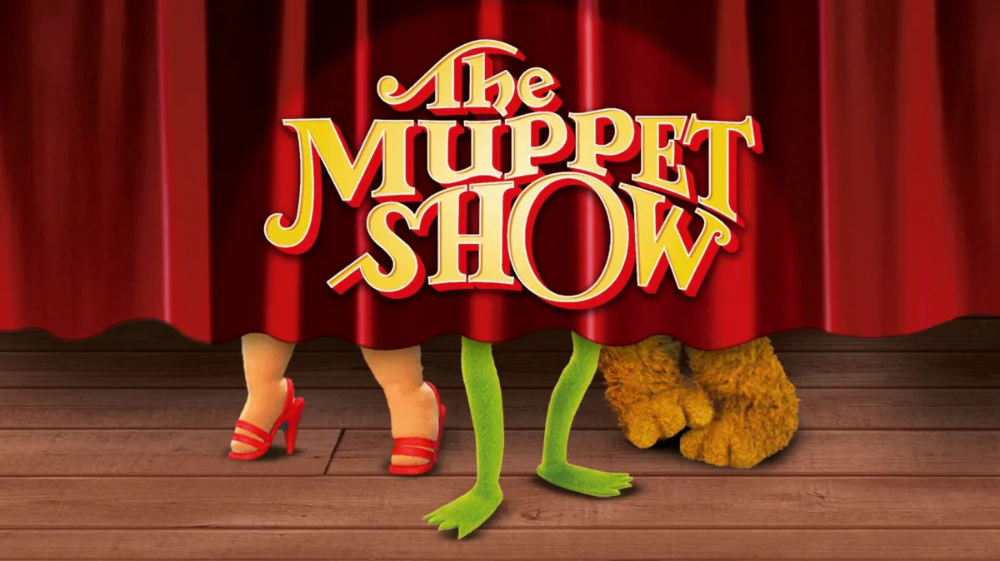

56:57 · 8 OPERE
Resistere l'irresistibile, ossia riconoscere il falso e l'assurdo.
Il filo del discorso
Ulisse legato all’albero della nave introduce una domanda sul potere di ciò che viene presentato come irresistibile. Dr Divago richiama l’Odissea e la lettura di Horkheimer e Adorno, poi passa alla televisione e a una cronaca che descrive un dialogo con poltrone vuote. La resistenza proposta è inizialmente semplice: sottrarsi a un programma, leggere, passeggiare o scegliere altre immagini.
Leggi la sintesi completaRiduci la sintesi
La critica riguarda la perdita di significato delle parole quando diventano strumenti per indirizzare il pubblico. Le valutazioni sprezzanti su giornalisti e intrattenitori restano del relatore. Un titolo su un docente sanzionato e il discorso sull’Ordine dei giornalisti aprono il problema della libertà di parola. Dr Divago sostiene che il linguaggio della cronaca possa servire anche come ammonimento a chi non obbedisce. La discussione si allarga ai Young Global Leaders, alla selezione dei dirigenti e al peso della notorietà. La presenza di personaggi politici in una rete privata gli appare come indizio di un potere che supera le istituzioni democratiche. Le note distinguono però vigilanza pubblica su una fondazione, gestione effettiva della organizzazione e prova di un coordinamento politico: non sono la stessa cosa. La questione dell’ambizione porta a Platone. Il relatore preferisce all’immagine del filosofo al potere la idea che debba governare chi non cerca la carica per vantaggio personale. Washington e Cincinnato diventano esempi morali di un rapporto diverso con il comando. Il confronto con le parti dignified ed efficient della costituzione britannica introduce una gerarchia fra chi indirizza e chi esegue. È una rielaborazione del relatore, da distinguere dal significato istituzionale dei termini in Bagehot e da una classificazione del valore delle persone. La seconda metà esamina numeri e scelte culturali. Il confronto fra decessi registrati in Indonesia e Germania viene usato per mettere in dubbio la narrazione pandemica, ma non tiene da solo conto delle differenze di età, rilevazione e fase epidemica. Il comunicato Swissmedic sulle segnalazioni dopo la vaccinazione introduce una domanda sulla coerenza dei criteri causali. Le note chiariscono che comorbidità e successione temporale vanno considerate attraverso una valutazione clinica: nessuna soglia di età rende in principio impossibile l’indagine di una causa. I libri per bambini, il Muppet Show e la controversia sulla traduzione di Amanda Gorman sono collegati al tema della protezione del pubblico da contenuti ritenuti sgradevoli. La storia di Siddhartha Gautama, tenuto lontano dal dolore prima dell’incontro con vecchiaia e malattia, diventa una immagine della maturazione attraverso ciò che disturba. Non è una citazione identificata del romanzo di Hesse. Il rapporto Hurun sulla ricchezza mondiale riporta infine al legame fra risorse economiche, influenza e politica; la distinzione fra patrimonio e incremento annuo corregge la lettura quantitativa del parlato. Il congedo riguarda una voce di Wikipedia in spagnolo e la etichetta di negazionismo. Dr Divago contesta la riunione di posizioni diverse sotto uno stesso nome e l’accostamento alla negazione della Shoah. La presenza di parole simili in più lingue non dimostra da sola una regia comune. Il punto filosofico resta la necessità di separare le proposizioni: esistenza del virus, gravità della malattia e giudizio su una misura politica non sono domande equivalenti. La resistenza conclusiva è proposta come esercizio di attenzione al linguaggio, da applicare anche alle analogie e alle affermazioni del relatore.
I libri nel discorso

Odissea
Note sul riferimento
Copertina: Einaudi · ET Classici · 2014
Copertina autentica controllata visivamente. Edizione di riferimento, non identificata come quella usata nel video.
Ulisse legato all’albero per il canto delle sirene: episodio esplicito, riconoscibile nel libro XII.

Dialettica dell’illuminismo
Note sul riferimento
Copertina: Einaudi, Piccola Biblioteca Einaudi, 2010
Edizione illustrativa dell'opera, con traduzione di Renato Solmi e introduzione di Carlo Galli; non identificata nel video.
Adorno, Horkheimer e titolo della Dialettica dell’illuminismo espliciti.
Odisseo, o mito e illuminismo
Note sul riferimento
Raccolta contenente l’excursus · Einaudi 2010: Copertina della raccolta Dialettica dell’illuminismo, Einaudi PBE 2010, ISBN 9788806203917, già presente e verificata. Illustra il volume contenente l’excursus, non un libro autonomo intitolato Odisseo.
Immagine autentica dell’opera, controllata visivamente; l’edizione di riferimento non è attribuita al filmato.
Excursus su Ulisse e le sirene identificato nella raccolta esplicita; titolo del capitolo riscontrato nell’indice Einaudi.

La Repubblica
Identificazione probabile
Note sul riferimento
Copertina: Laterza · La Repubblica · edizione con testo a fronte di riferimento
Immagine associata all’ISBN di riferimento e controllata visivamente; edizione e traduzione non identificate come quelle citate o lette nel video.
Platone, filosofi al potere e successiva riluttanza a governare: riconoscibili Repubblica V473c, I347c e VII521b, titolo non pronunciato.
The English Constitution (La Costituzione inglese)
Identificazione probabile
Note sul riferimento
Copertina: Scansione OpenLibrary della copertina Oxford World’s Classics 2009, ISBN 9780199539017, edizione Miles Taylor: autore e titolo inglese leggibili, incisione di una assemblea. L’opera è del 1867; nessuna edizione viene attribuita al filmato.
Immagine autentica dell’opera, controllata visivamente; l’edizione di riferimento non è attribuita al filmato.
Dignified ed efficient nella costituzione britannica: probabile Bagehot, autore e titolo non pronunciati.

The Muppet Show
Note sul riferimento
Immagine ufficiale Disney+ · serie originale: Immagine promozionale ufficiale della scheda Disney+ della serie 1976–1981: titolo sul sipario rosso e piedi dei personaggi. Non è copertina di libro, confezione video o immagine del diverso speciale 2026.
Immagine autentica dell’opera, controllata visivamente; l’edizione di riferimento non è attribuita al filmato.
Muppet Show nominato esplicitamente; nessun episodio identificato.
The Hill We Climb. An Inaugural Poem for the Country
Identificazione probabile
Note sul riferimento
Copertina: Copertina ufficiale Viking Books,30 marzo 2021, ISBN 9780593465271: giallo, autore rosso, titolo blu e prefazione Oprah Winfrey leggibili. Illustra il poema pubblicato in volume, non una raccolta diversa e non la traduzione olandese.
Immagine autentica dell’opera, controllata visivamente; l’edizione di riferimento non è attribuita al filmato.
Testo della poetessa dell’insediamento di Biden e controversia traduttiva olandese: probabile The Hill We Climb, autore e titolo non detti.
Hurun Global Rich List 2021
Identificazione probabile
Note sul riferimento
Banner ufficiale del rapporto · 2021: Banner originale del rapporto Hurun Global Rich List 2021 pubblicato dall’istituto: titolo inglese, anno 2021 e marchio dello sponsor Shimao leggibili. È l’immagine di presentazione del rapporto, non una copertina libraria o un grafico ricreato.
Immagine autentica dell’opera, controllata visivamente; l’edizione di riferimento non è attribuita al filmato.
Haran/Hurun Report e3228persone,14mila miliardi: dati compatibili con Global Rich List 2021, titolo completo non scandito.